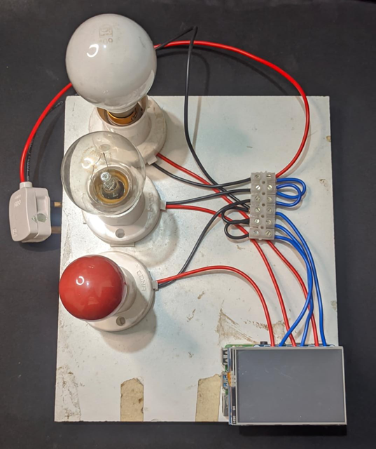

I build things to understand them. That's how it started: a Bluetooth rover in high school, just to see if I could. Then an onscreen keyboard, then a physics engine, then a monkey deterrence system deployed on a real plantation. Each project was a question I needed to answer by building.
Some of them worked. Some didn't. A few taught me more in failure than success ever could. But looking back, there's a thread, and I only noticed it by following it.
-
AudiTex
A Chrome extension that runs Kokoro TTS entirely on-device. No backend, no paywall, no server bills.
I got annoyed at Speechify's paywall and decided to build a free alternative. The naive version was obvious: run a backend, stream audio back. Took a week to build, worked great. Then I realised I'd just become Speechify, except I'd be the one paying the bills. So I scrapped it.
The real question became: why doesn't something truly free exist already? Good TTS has been a solved problem for a while now. Turns out the bottleneck isn't the model; it's the cost of running inference at scale. The moment I understood that, the answer was obvious: run it in the browser. No server, no cost, no paywall, ever.
Getting there wasn't clean. Kokoro's ONNX model needed a phonemizer that didn't exist in the right format, so I had to normalize the phoneme outputs to match what Kokoro expected. Then chunked generation introduced gaps in playback, so I built a buffer. Then Chrome killed the offscreen document after 60 seconds, so the buffer moved to IndexedDB. Then the 310MB model needed to survive restarts without re-downloading, so that moved to OPFS. Every fix had a trapdoor.
Built with Verilog. Just kidding: JavaScript, ONNX Runtime Web, WebAssembly, Web Audio API, Web Workers, OPFS, IndexedDB, Web Codecs, WSOLA, and Shadow DOM. Webpack held it all together and barely survived. Feb 2026
-
GitTrack
A Chrome extension that tracks job applications locally, prevents duplicate applies, and keeps you accountable through streaks.
Two things broke me. First: my friends and I were manually texting each other our daily application counts to stay accountable. It worked but it was held together with string. Second: during an AWS outage I needed to check if I'd applied to a specific job on Simplify. Login, wait, dismiss promotions, wait again, search. Two minutes for one yes or no. I lost it and started building.
The first version was just a button injected into GitHub job listing pages: applied or not, stored locally, instant. No login, no cloud, no waiting. V2 added duplicate detection, streaks, and the ability to share your streak count with friends.
Three months later, 1000+ jobs tracked, and I've called friends to warn them they're about to break their streak. They've done the same for me. Turns out a stupid little number is a surprisingly effective forcing function.
Built with JavaScript, Chrome Extensions Manifest V3, and IndexedDB. No servers were harmed. Sept 2025
-
Chrome Extension Testing MCP
Install now:
npx chrome-extension-tester-mcpCopyAn MCP server that lets AI coding agents autonomously test Chrome extensions. No manual reloading, no copy-pasting console errors, no clicking through the same popup for the hundredth time.
After building Auditex and GitTrack, I noticed the worst part was never the coding; it was the testing. Every small change meant manually reloading the extension, clicking through the UI, checking storage, reading console output, and pasting errors back into the agent. For simple extensions, there's no reason an AI agent can't do all of that itself.
So I built an MCP server that gives Claude direct access to a real browser through Playwright. Load an unpacked extension, interact with its popup, inspect chrome.storage, monitor network requests, check badge state, send messages to the background script, simulate tab events: 13 tools in total. Some I knew I needed from day one, others I added as I kept testing my own extensions and hitting new gaps. Published as an npm package, works with Claude Desktop and Claude Code out of the box.
Because life's too short to reload an extension 400 times.
Published as an npm package, works with Claude Desktop and Claude Code out of the box. March 2026
-
2D Rigid Body Physics Engine
A real-time 2D physics engine built from scratch: collision detection, rigid body dynamics, constraint systems, and spatial partitioning.
I spent a semester building a game in Unity and everyone treated the physics engine like some sacred artifact. Nvidia does the same with PhysX. I thought: isn't physics just... natural? How hard can replicating it really be. Then I started building and nearly had a meltdown.
Every frame: resolve forces, integrate velocities, detect collisions, resolve impulses, satisfy constraints, sleep idle objects: all of it, 60 times a second. Then I thought about Overwatch or Apex running at 120fps with hundreds of objects and ragdolls and projectiles and I just sat there. The "crown jewel" started making sense.
Ended up implementing broad phase spatial partitioning that cut collision checks from O(n²) to O(n), impulse-based collision response, a constraint solver for ropes and chains, and demos: Newton's cradle, pool table, explosions. The humbling part was disabling circle-box collisions entirely because the normal calculation was unreliable. Shipped without it rather than ship something broken.
Physics brought me down. Built with C++ and SFML. Dec 2025
-
AlphaZero (Connect Four & Tic-Tac-Toe)
An implementation of AlphaZero's core architecture: Monte Carlo Tree Search guided by a neural network trained entirely through self-play.
Watched the AlphaGo documentary, got curious about how it actually worked, and decided the best way to understand it was to build it. No hardcoded rules, no human game data; just a neural network and MCTS teaching each other through self-play. The model never got enough training to develop a complete strategy, so it plays purely to win with no concept of blocking. Exploit that and it crumbles. It's a bully with no defense.
If you can't beat them, build them: Python, PyTorch. Nov 2025
-
Re-Pong
A chaotic multiplayer Pong variant with power-ups, portals, and random arena events that turn a 60-year-old game into something you can't stop playing.
The original idea was wilder: a black hole sucking all classic arcade games into a Pong arena, Pac-Man wandering onto the board mid-rally, bricks falling from nowhere. The final version was more grounded but kept the same spirit: take Pong, then break it in carefully designed ways.
Led a small team through multiple build-playtest-rebuild cycles. Every iteration we'd ship, watch people play, listen to what frustrated them versus what made them laugh, and go back. Keeping everyone excited through the unglamorous middle rounds of that loop was the real job. The result was the most replayed game in the class.
Built with Unity. We learned that people don't actually want chaos; they want the illusion of chaos. So we built structured randomness, which is just chaos with a product manager. Aug–Nov 2025
-
CurioPay
Micropayments for AI agents: give an agent its own wallet, let it dynamically pay for exactly what it needs, when it needs it.
Built at Techstars Startup Weekend with a team I met on day one. The idea: AI agents shouldn't need monthly subscriptions to access content or services. An agent that needs one news article on one specific day should pay $0.50 for that article, not $20/month for a subscription it uses once. Stablecoins make the transaction economics actually viable. No credit card fees eating the margin on a fifty cent payment.
The hardest part was scoping fast enough to have something demoable by Sunday. We spent the first chunk of the weekend finding our footing as a team and sharpening the idea, so we built around a sandbox wallet rather than live on-chain connections. The demo showed the full flow: agent receives a task, evaluates cost, bids, pays, gets the resource. The mechanics were real, the wallet was assumed.
Pitched to a crowd of 60-100 people, didn't place, but the idea landed.
Built with React, Python, JavaScript, and Solana. Also the blind optimism of a 48-hour deadline. April 2025
-
NFL Mobile Game: Resource Economy System
Backend logging and analytics infrastructure for an NFL mobile game's in-game economy, built as part of a 25+ person team.
Researched successful mobile sports games, then built the logging pipeline that tracked every economic trigger in the game: contract bonuses, inflation patterns, weekly deltas. The goal was catching economy-breaking exploits before they shipped.
Built with Python and C#. One small cog in a very large machine. Summer 2025
-
Cricket Trajectory Tracer
Real-time ball tracking, speed detection, and zone analysis for cricket, built as a proof-of-concept to pitch to a cricket league software company.
Cricket balls are small, fast, and hard to track. Standard YOLO struggled, so I combined it with SAHI: slicing the frame into overlapping tiles before inference, then stitching detections back. That alone was most of the battle.
The rest of the pipeline: pose detection identifies the exact moment of ball release by detecting when the bowler's wrist, shoulder, and back hit 180 degrees. From there, frame-counting gives speed. A one-time pitch annotation maps zones (good length, yorker, bouncer), and for each delivery, the lowest y-coordinate frame tells you where it landed.
Built a working demo, pitched it to a company. They were impressed, we didn't get the deal. Learned more from that meeting than from building the whole thing.
Built with Python, YOLO, SAHI, and OpenCV. Even the algorithm needed a good length delivery to get it right. May 2024
-
Dental Analysis Tool
An object detection tool that analyzes dental X-rays, detects tooth tilt angles, and flags which teeth need braces, built in collaboration with a dental college.
Trained a model on dental X-ray images to draw bounding boxes around individual teeth, then calculated the tilt angle of each tooth to determine whether a patient needed braces and which specific teeth needed attention. Getting the angle calculations reliable was the core challenge: bounding boxes on X-rays are messier than they look.
Deployed on Streamlit so dental students could upload any X-ray and get a preliminary analysis instantly. Not a replacement for a dentist, but a useful first pass for students learning to read X-rays.
Built with Python, YOLO, and Streamlit. Teeth, it turns out, are harder to detect than monkeys. 2024
Built with Professor Balaji Prabhu
-
Blue Collar ATS
A hiring pipeline and resume parser built for companies that hire at scale, designed specifically for the blue collar workforce, where existing ATS tools completely fall short.
Spent a summer working alongside the Senior VP of Jio and technical executives from Lenovo and ITC to understand the problem firsthand. Mass hiring of blue collar workers is a different beast. Resumes are inconsistent, unstructured, and often barely parseable. The criteria for "fit" varies wildly by role. Existing ATS tools are built for white collar hiring and just don't work here.
Led a team of four. My piece was the resume parser: NLP and regex based extraction that pulled out the relevant candidate information and built an internal profile that could be filtered against role requirements. The hardest parts were all of the above: inconsistent inputs, defining fit, and building something executives with decades of hiring experience would actually trust.
Demoed to the room. Built with Python and spaCy. The hardest workers are the hardest to hire.
Built with Python and spaCy. 2023
-
Classifying Memory-Based Injections Using Machine Learning
A published research paper on detecting memory injection attacks using Random Forest and KNN, built on data we collected by writing our own malware.
Memory injection attacks are hard to detect because they live entirely in RAM, leaving no trace on disk that traditional antivirus can find. The idea was to use process list data (memory usage, loaded DLLs) to train a classifier that could distinguish injected from clean processes.
The hardest part wasn't the ML. It was everything around it. We wrote our own controlled malware in C++ to inject processes, built a fully isolated dual-VM environment with a fake network layer so the malware couldn't go rogue, and then collected data by running injections repeatedly across different processes. Setting that up without anything escaping containment was its own project.
Both Random Forest and KNN performed well. Published in the European Journal of Engineering and Technology Research.
Built with Python, scikit-learn, C++. The malware was ours. Probably. 2023
Built with Amogh
-
Homeio
A Raspberry Pi smart home system with touchscreen control, Android app, and remote access, built from scratch with zero prior knowledge of any of it.

My teammate and I had zero knowledge of Raspberry Pi, high-voltage wiring, TFT displays, Android development, or network programming. We had two months. So we made a plan and learned in phases: electrical safety first, because 230V AC is not forgiving, then the TFT interface, then Java for the Android app, then ngrok for remote access, then the wiring.
The wiring week was the nerve-wracking part. Designed to control anything from lights to fans to appliances. In the demo it controlled lights. At one point it also controlled whether our home had a working fuse.
Built with Raspberry Pi, Python, and Java. Shockingly, we survived the wiring week. 2023
-
Google Summer of Code 2022: Plone Foundation
Ported a recycle bin add-on for Plone 6, contributed to one of the largest open source CMS ecosystems, and learned what real open source contribution actually looks like.
Got into GSoC on my third attempt. The project was porting ftw.trash (a recycle bin add-on) from Python 2 to Python 3 and making it compatible with Plone 6. Sounds straightforward. It wasn't.
Two weeks just getting Plone to run locally. M1 Mac refused, Ubuntu refused, eventually got there with help from the community and my mentor Mike. Then the actual porting, dependency untangling, writing integration and functional tests from scratch, adding i18n support, and stripping out half the dependencies that were no longer needed.
The biggest thing I took away wasn't the code; it was what it feels like to work inside a large, real codebase with real users and a mentor who pushed me to learn rather than just ship.
Built with Python, Plone, and three years of failed GSoC applications finally paying off. 2022
-
Scene understanding with IoT: Real-Time Environmental Response System
A 5D viewing prototype that analyzes video frames in real-time and triggers physical hardware responses: fire on screen turns on a heater, rain triggers a sprinkler, wind spins a fan.
Took over someone else's idea and had to build it from scratch. The concept was simple and kind of magical: make watching a video a physical experience by having the room react to what's on screen. A CNN classifies each frame for fire, water, or wind, and an Arduino translates that into real hardware responses.
Getting all three pieces to talk to each other (accurate detection, reliable Arduino integration, and low enough latency to feel reactive) was the whole challenge. It ended up laggy but directionally correct. You could feel what was happening on screen, just with a slight delay.
Sometimes the future arrives a little late. Built with Python, TensorFlow, and Arduino.
Built with Python, TensorFlow, and Arduino. 2022
Built with Amogh
-
Monkey Deterrence System
A real-time monkey detection and deterrence system deployed on a Jetson Nano, built to protect coffee plantations from raids that destroy up to 30% of produce.
Chikkamagaluru is coffee country. It's also monkey country, and the two don't coexist well. Raids were a consistent, expensive problem with no good automated solution. So I built one.
Collected and trained a custom object detection model, deployed it on a Jetson Nano for around-the-clock edge inference. The system takes RTSP streams directly from existing plantation security cameras. No new hardware needed. When detection confidence crosses a threshold for 5 consecutive frames, it triggers loud deterrent sounds and fires an SMS alert via Twilio to the estate owner. Deployed and tested on a real plantation.
Built with Python, PyTorch, and Twilio by someone who types like a monkey. 2022
Built with Professor Balaji Prabhu
-
Foxy's Castle
A 2D platformer I built to promote auditions for my college's technical club, and it worked better than any poster ever could.
We needed freshmen and sophomores to show up for auditions, and everyone else was doing the usual WhatsApp forwards and Instagram stories. I wanted to try something different. So I built a game where you play as a dog in knight's armor, navigating a medieval version of our actual campus: collecting crystals, fighting bats, talking to NPCs, and solving a puzzle to reach the final room, which revealed the audition dates and invited players to come say hi to the team.
I'd never touched a game engine before. Picked up Godot from scratch, designed the entire thing, and shipped it in a week and a half. 400+ plays in the first week, and audition turnout doubled. Over 150 students showed up.
Built with Godot Engine and GDScript. Turns out a dog in a knight costume is better marketing than a poster. April 2022
-
Onscreen Keyboard
A virtual keyboard controlled entirely by hand gestures. No touch, no click, just a webcam and MediaPipe tracking your fingers in real time.
Saw it online, thought it was the coolest thing I'd ever seen, and immediately wanted to build it myself. First time touching computer vision. Picked up OpenCV and MediaPipe, figured out hand landmark detection, mapped finger positions to keyboard keys, and got it working.
It actually worked well. But more than the project, it was the moment I realized how much was possible when you could teach a machine to see. Never looked at a webcam the same way again.
Built with Python, OpenCV, and MediaPipe. Haven't looked at a webcam the same way after. 2021
-
Bluetooth Rover
A Bluetooth-controlled robot built in high school. Won second place at a fest and started everything.
Arduino, a few motors, a Bluetooth module, and a high school student who had no idea this would become a career. Built it, steered it across a stage, won second place.
That was it. That was the moment.
Built with Arduino and the dangerous combination of curiosity, free time and a little bit of help from my elder brother. 2015